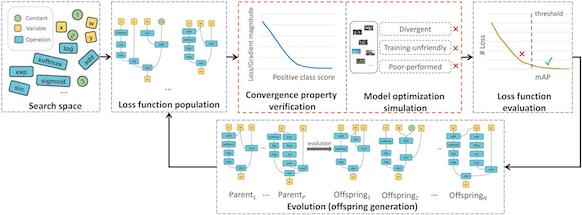
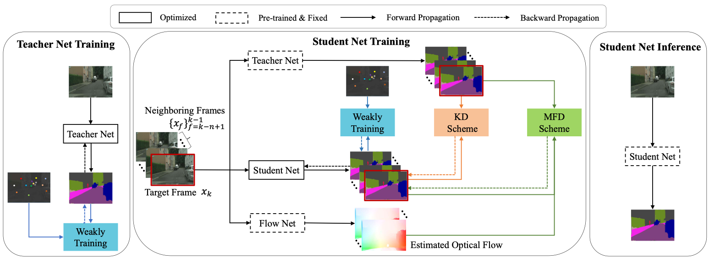
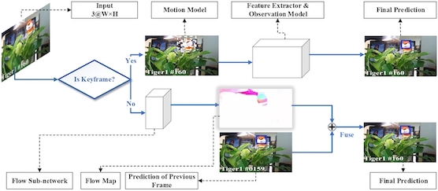
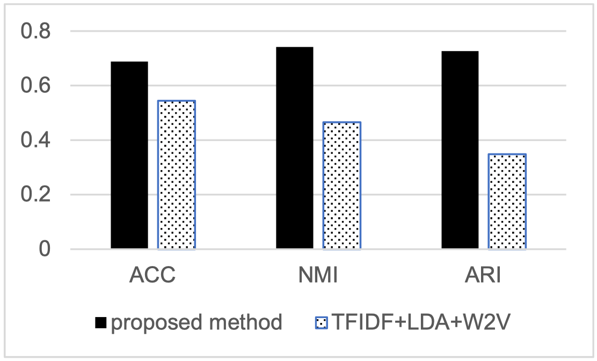
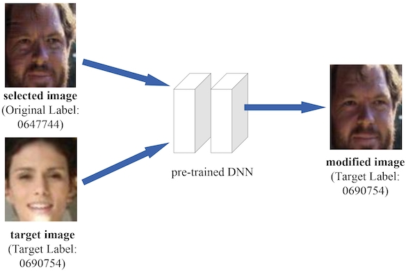

Peidong Liu[Google Scholar]Second-year Master Student
Department of Computer Science and Technology |

|
Biography
I am currently a second-year master student in the Department of Computer Science and Technology, Tsinghua University, graduating in June 2022. My supervisor is Prof. Shu-Tao Xia. I have been fortunate to have the priviliege to work with Prof. Xiaodan Liang at Sun Yat-Sen University, Dr. Hang Xu at Huawei Noah's Ark Lab, Dr. Litong Feng and Dr. Xinjiang Wang at SenseTime Research. I received my B.S. in Computer Science from Sun Yat-sen University summa cum laude in 2019. My research interest lies in computer vision and AutoML, including scene understanding, visual tracking and AutoML for loss function search.
News
- I am actively looking for Ph.D. position worldwide starting Fall 2022.
- (2021-01) Our paper has been accecpted by ICLR2021!
Publications
* denotes equal contribution.|  | Loss Function Discovery for Object Detection via Convergence-Simulation Driven Search [PDF] [Code] |
|
|
Peidong Liu*, Gengwei Zhang*, Bochao Wang, Hang Xu, Xiaodan Liang, Yong Jiang, Zhenguo Li International Conference on Learning Representations (ICLR), 2021. |
|  | Weakly Supervised Video Semantic Segmentation with Memory Flow Distillation |
|
|
Peidong Liu*, Xiyu Yan*, Zibin He*, Yong Jiang, Shu-Tao Xia CVPR2021 Under review. |
|  | Deep Flow Collaborative Network for Online Visual Tracking [PDF] |
|
|
Peidong Liu, Xiyu Yan, Yong Jiang, Shu-Tao Xia International Conference on Acoustics, Speech and Signal Processing (ICASSP, CCF-B), 2020 |
|  | LDA Meets Word2Vec: A Novel Model for Academic Abstract Clustering [PDF] |
|
|
Changzhou Li, Yao Lu, Junfeng Wu, Yongrui Zhang, Zhongzhou Xia, Tianchen Wang, Dantian Yu, Xurui Chen, Peidong Liu, Junyu Guo International World Wide Web Conferences (WWW, CCF-A), 2018 |
|  | Visual Privacy Protection via Mapping Distortion [PDF] [Code] |
|
|
Yiming Li*, Peidong Liu*, Yong Jiang, Shu-Tao Xia International Conference on Acoustics, Speech and Signal Processing (ICASSP, CCF-B), 2021 |
Selected Awards
- 2019.06 Graduate with Honors at Sun Yat-Sen University
- 2018.12 Exchange Student Scholarship of Sun Yat-Sen University
- 2017.10 Bronze Award in Intel Cup – Parallel Application Challenge (PAC) 2017, China (Top 6%)
- 2017.10 First Class Scholarship of Sun Yat-Sen University (Top 5%)
- 2017.01 Honorable Mention in Interdisciplinary Contest in Modeling
- 2016.10 First Class Scholarship of Sun Yat-Sen University (Top 5%)
Research Experience
| 2020.04 - till now | Noah's Ark Lab, Huawei Research Intern Mentor: Xiaodan Liang, Hang Xu, Bochao Wang |
| 2019.09 - till now | Department of Computer Science and Technology, Tsinghua University Master Student Supervisor: Shu-Tao Xia |
| 2019.07 - 2019.09 | Y-Tech AI Lab, Beijing Kuaishou Technology Ltd. AI Intern |
| 2018.11 - 2019.06 | Fundamental Technique Research Group, SenseTime Research Research Intern Mentor: Litong Feng (Senior Researcher, Ph.D.) |
| 2018.03 - 2018.05 | NUS-Tsinghua Center for Extreme Search(NExT++), NUS, Singapore Research Assistant Mentor: Zhaoyan Ming (Ph.D., Team Head, NExT++) |
| 2017.10 - 2018.02 | Smart Mobile Computing Lab, Advanced Networking and Computing Systems Institute, SYSU Research Assistant Mentor: Xu Chen (Professor, School of Data and Computer Science, SYSU) |
| 2017.07 - 2017.10 | Natural Language Processing Group, Guangdong Province Key Laboratory of Computational Science, SYSU Research Assistant Mentor: Yao Lu (Professor, School of Data and Computer Science, SYSU) |
Computer Skills
- Deep Learning Framework: Pytorch; Caffe
- Advanced Programming Languages: C++; Python; C; Java; R
- Distributed Framework: Spark
- Database: SQL; MongoDB
- Web Development Languages: Html; Css; Javascript; Nodejs; Angularjs
- Programming Software: Matlab
- Others: Onnx; Docker; Linux
Education
2019.09 till now, master student of Department of Computer Science and Technology at Tsinghua University
2015.09 - 2019.06, undergraduate student of School of Computer Science and Engineering at Sun Yat-sen University
2018.01 - 2018.05, exchange student of School of Computing at National University of Singapore, working as a research intern in NExT++ lab